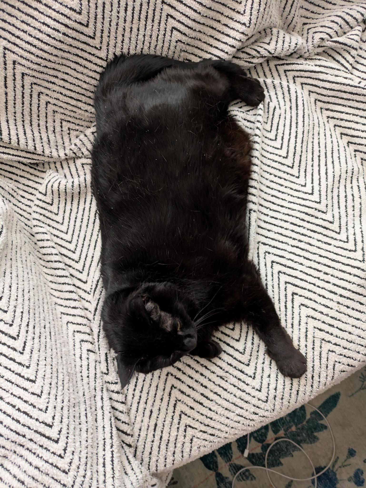
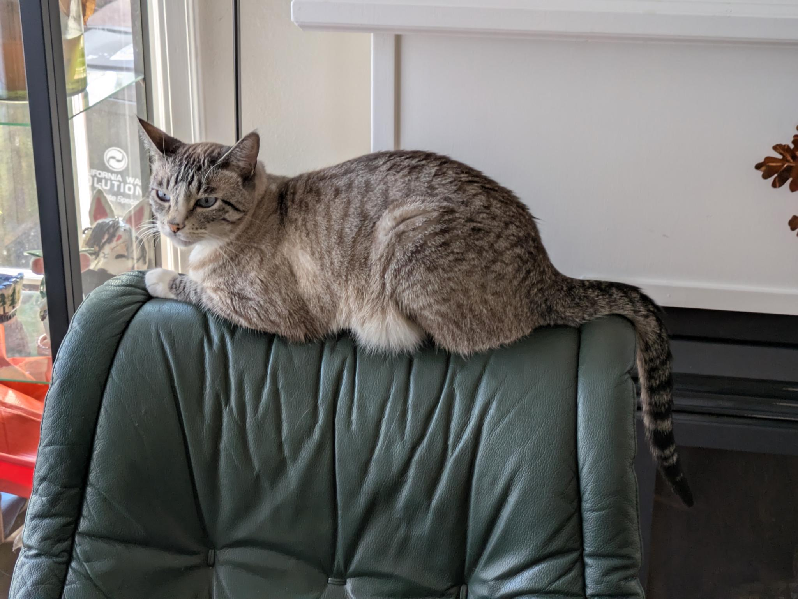

Hi there! o/ My name is Lyn, and I am a third year data science student at UCSD!
I love learning about just about anything, but I have a particular taste for history, human psychology, and plant/fungi ID.
While I am currently residing in San Diego for school, my home and heart is in Oakland. I also have a base of family/friends in Los Angeles as well!


These are my two cats! I love them very much. I miss them when I am down in San Diego for school.
I have two cats and two dogs, but I love them all equally. Except for Elaine. I love her the most.
Okay, time to get serious...
Lead project designer and programmer in a team of two, exploring a real-world League of Legends dataset to using character selection to predict game outcomes, implemented using pandas and scikit-learn.
Solo developer on a WIP Magic: The Gathering deck builder application for organizing and creating new decks. Implemented using Tkinter and pandas, drawing its data from the official Magic: The Gathering API.
Leader and principal programmer of a team of six students collaborating on a school project designed to identify trends in the lifespans of text-based memes online. Found significant results and created an accessible video presentation as a deliverable.